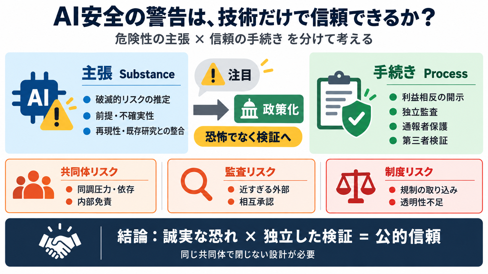

主題
警告（危険性）× ガバナンス（信頼性）を分ける

信頼は“技術”だけで成立しない
AI安全（existential risk）を強く訴える言説は、技術的評価とは別に、共同体・資金・監査の“手続き”で信頼されるべきだ、という論点を圧縮します。
“正しさ”の次に来る
AIが破滅的に振る舞う可能性（真偽）と、「その警告を誰が・どういう手続きで語っているか」（信頼性）は別問題です。
警告は“物語”にもなる
合理主義コミュニティは、思考訓練だけでなく「世界を救う主人公」という救済物語へ接続し、反証が“信仰の強さ”として回収されうる、と問題提起します。
注目を政策へ
Anthropicの研究者 Jacob Coxon の退職時メモで「今世紀末に人類を殺す可能性が真剣にある」と明記された出来事が、大きな注目を集め、同僚や一部政治家が追認する形で政策課題化が進んだ、と描かれます。
内部に起きうること
警告者の共同体内部では、悪意がなくても、心理介入・同調圧力・依存・差別的な言説・権威主義への親和性などが起きうる、と列挙します。
“善意”が危害に変わる
安全研究の名のもとで、参加者の躊躇が“欠陥”として扱われたり、権力関係が強まったりすると、被害が増幅しうる—という見立てです。
独立監査の設計図
監査が実効的な独立性を持つには、利益相反だけでなく、再現可能な検証や通報者保護まで含めて条件化する必要がある、と述べます。
二つの“正義”
AIが危険である可能性と、危険を語る共同体が公的信頼を得るだけのガバナンスを備えているかは、別に評価すべきです。
監督の距離感
AI安全の評価組織（例：METRのような文脈）が登場しても、親密な人脈や共同体の同一性があると、形式上の外部性でも独立が損なわれうる、と問います。
政治・資金の接続
rationalism（合理主義）と EA（効果的利他主義）は起源が別でも、人・資金が交差し、長期主義として AIリスクが“旗艦課題”として大規模に資金配分される流れが描かれます。
危険を利用する側面
扱うリスクはAIそのものだけでなく、「警告を利用した規制の取り込み」「独立性の欠如」「コミュニティ内の免責」といった社会制度としてのリスクにも及ぶ、とまとめます。
著者の強みと限界
強みは、技術的正しさより先にガバナンスを問うこと。限界は、因果の一括結びや反証可能性の粒度、一次ソース不足が起こりうる点です。
退職メモを扱う手順
警告（例：退職メモのような終末警告）を材料にするなら、恐怖に引きずられず、検証可能性と制度的裏取りを分解して確認します。
最終含意
AIが危険かどうかに関わらず、政策と研究の信頼は“手続き”で担保されるべき。共同体の内部問題が疑われる場合は、より厳格な独立監査・透明性・通報保護が必要です。
No references found